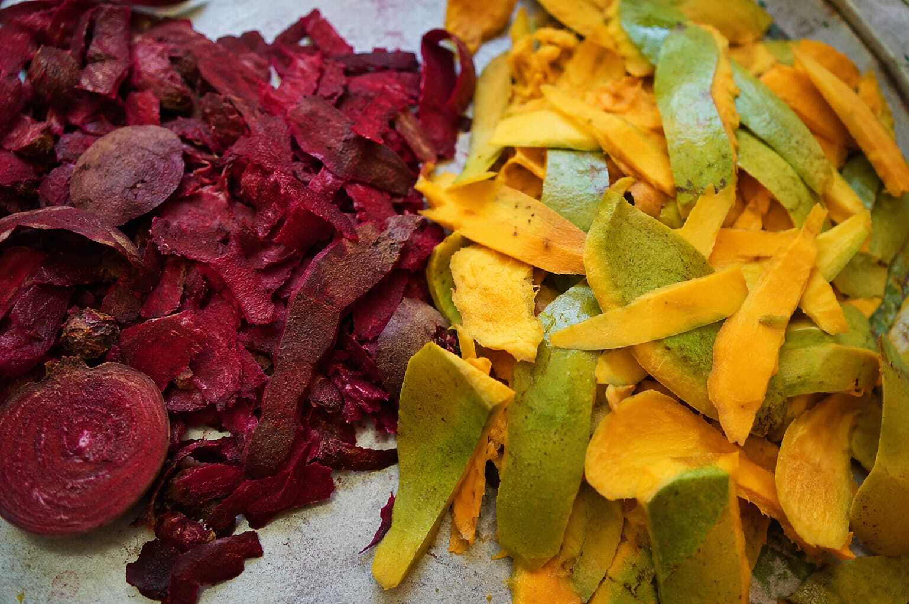
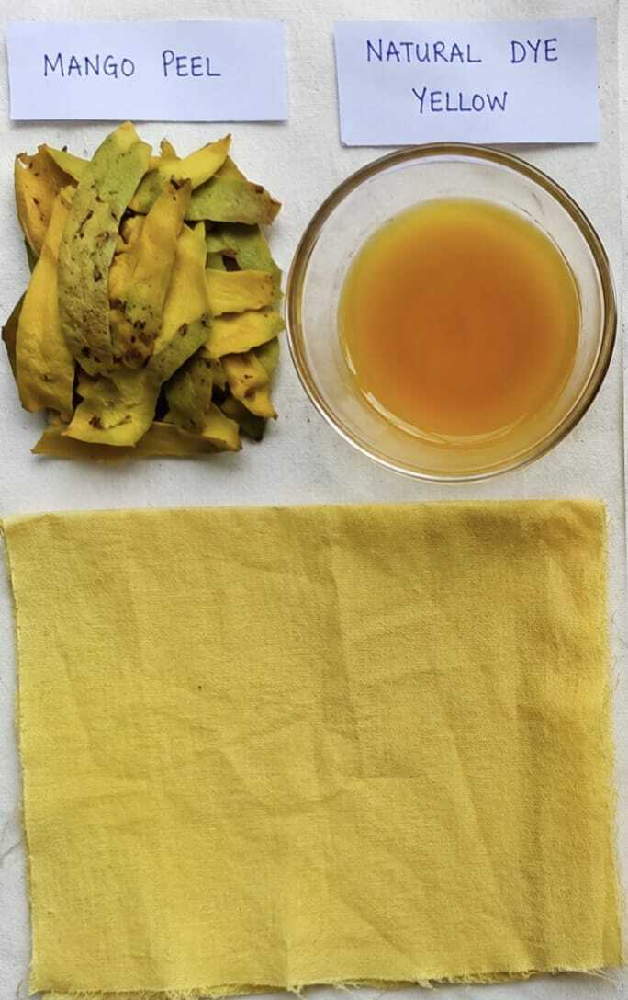
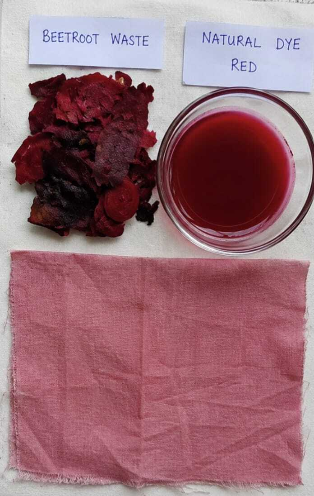
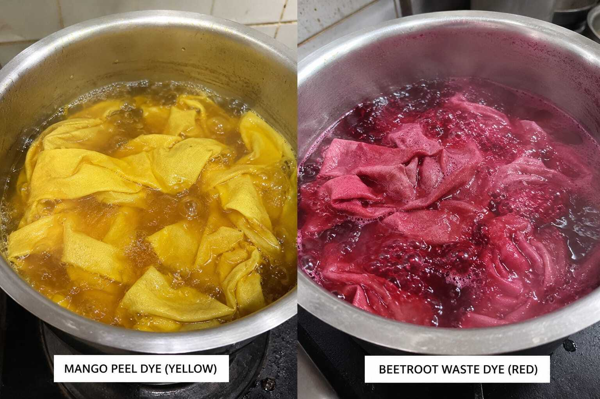

01 — WASTE TO COLOR
Natural Dyeing from Agricultural Waste
Natural dyes · Cotton · Mordanting
Exploring mango peel and beetroot peel as natural dye sources for cotton, with mordanting and process control used to improve dye uptake and color retention.
Experiment structure
Waste collectionPrepare agricultural waste
Dye extractionPrepare natural dye bath
MordantingSupport dye uptake & retention
Fabric testingCompare shades & fastness
Golden yellowMango peel dye result
Soft pinkBeetroot peel dye result
Waste → colorCircular textile approach


